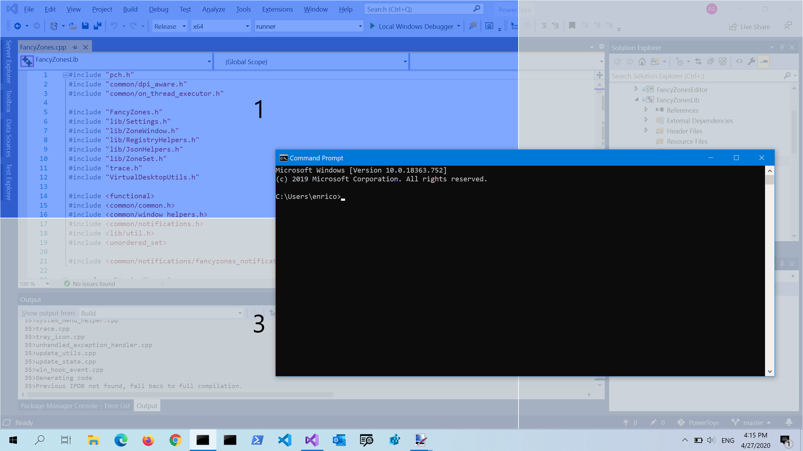
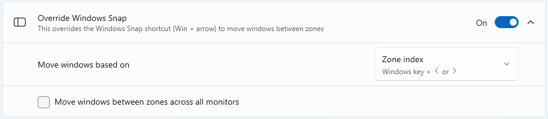
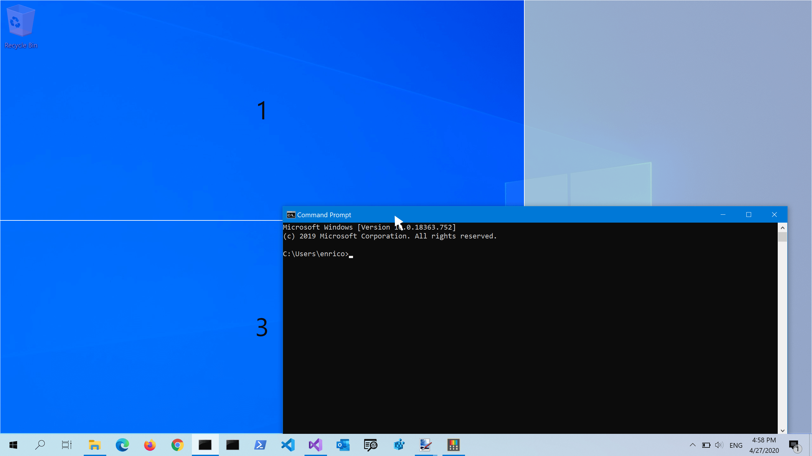
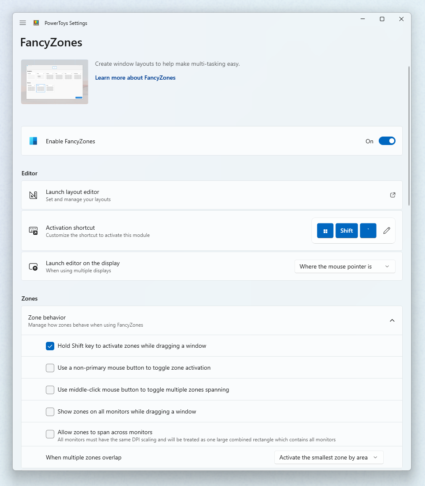
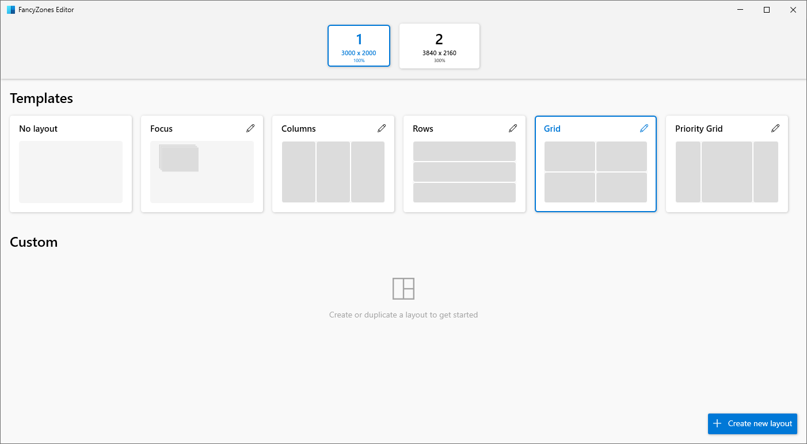
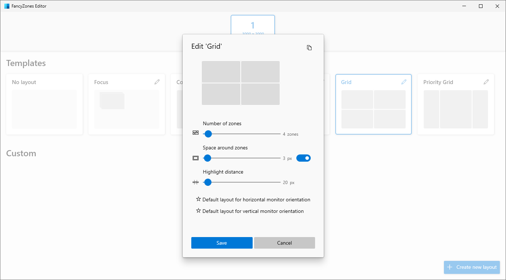
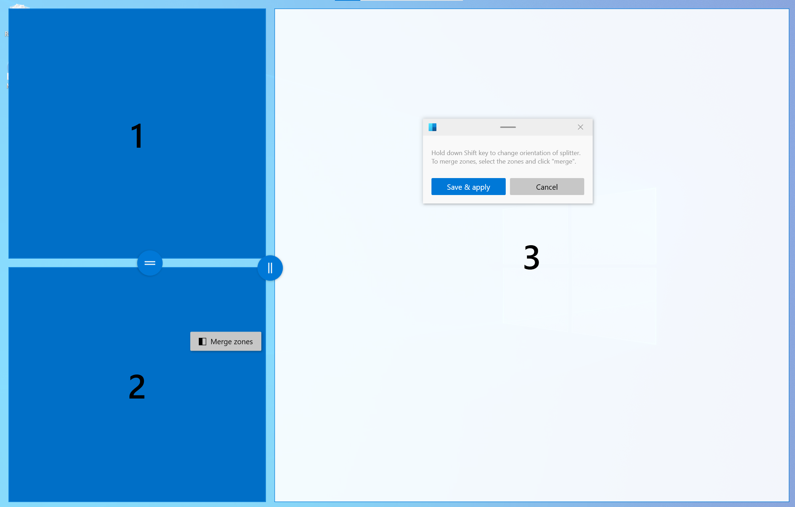
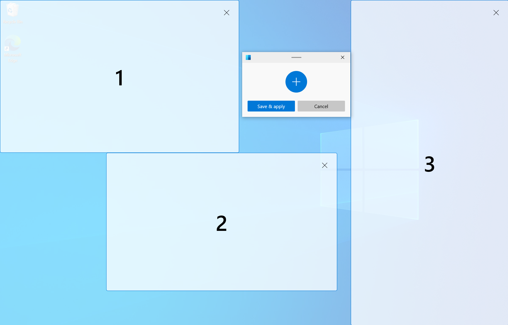
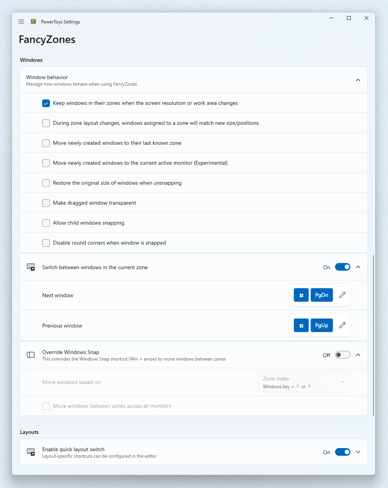

FancyZones window manager utility
FancyZones is a powerful window manager utility in PowerToys that helps you arrange and snap windows into custom layouts for improved productivity and workflow efficiency. This utility allows you to define specific zone locations on your desktop as targets for windows, automatically resizing and repositioning them when dragged into zones or activated via keyboard shortcuts.
Snap to a single zone with mouse
Drag the window. By default, you'll also need to select and hold Shift. You'll see the zones appear. As you move your mouse, hovering over a zone will highlight that zone.
You can also trigger zone selection mode by using a non-primary mouse button if Use non-primary mouse button to toggle zone activation is selected.
If both Hold Shift key to activate zones while dragging and Use non-primary mouse button to toggle zone activation are cleared, zones will appear immediately after you start dragging the window.

Snap to a single zone with keyboard
Select Override Windows Snap in the FancyZones settings. Use Win+[arrow keys] to snap a window to a zone. Use Move windows based on to choose whether to move windows based the zone index or a window's relative position.

Snap to multiple zones
A window can be snapped to more than one zone in the following ways.
Snap to two zones by hovering the edges
If two zones are adjacent, you can snap a window to the sum of their area (rounded to the minimum rectangle that contains both). When the mouse cursor is near the common edge of two zones, both zones are activated simultaneously, allowing you to drop the window into both zones.
Snap to multiple zones with the mouse and keyboard
Drag the window until one zone is activated, then hold Ctrl while dragging the window to select multiple zones.

Snap to multiple zones with only the keyboard
Turn on the Override Windows Snap toggle and select Move windows based on: Relative position. Use Win+Ctrl+Alt+[arrow keys] to expand the window to multiple zones.
Window switching
When two or more windows are snapped in the same zone, cycle between the snapped windows in that zone by using the shortcut Win+PgUp/PgDn.
Shortcut keys
| Shortcut | Action |
|---|---|
| ⊞ Win+Shift+` | Opens the editor (this shortcut can be changed in the Settings window) |
| ⊞ Win+Left/Right | Move focused window between zones (only if Override Windows Snap hotkeys is selected and Zone index is chosen; in that case only the ⊞ Win+Left and ⊞ Win+Right are overridden, while the ⊞ Win+Up and ⊞ Win+Down keep working as usual) |
| ⊞ Win+Left/Right/Up/Down | Move focused window between zones (only if Override Windows Snap hotkeys is selected and Relative position is chosen; in that case all the ⊞ Win+Left, ⊞ Win+Right, ⊞ Win+Up and ⊞ Win+Down are overridden) |
| ⊞ Win+PgUp/PgDn | Cycle between windows snapped to the same zone |
| ⊞ Win+Ctrl+Alt+[number] | Quickly apply custom layout (you need to assign number to the custom layout in the editor first) |
FancyZones doesn't override the Windows ⊞ Win+Shift+[arrow keys] to quickly move a window to an adjacent monitor.
Snap apps with elevated permission
To snap applications that are elevated (such as Windows Terminal or Task Manager), run PowerToys in administrator mode. Read Running as administrator for more information.
Get started with the editor
FancyZones includes an editor for layouts that can be accessed in PowerToys Settings.
Open the layout editor
Open the layout editor by selecting Open layout editor or with Win+Shift+` ("back-tick" or "accent grave"). You can change the FancyZones layout editor shortcut in PowerToys Settings.

Layout Editor: Choose your layout
When you first open the layout editor, you'll see a list of layouts that can be adjusted by how many windows are on the monitor. Selecting a layout shows a preview of that layout on the screen. The selected layout is applied automatically. Double-clicking a layout will apply it and close the editor. Select a monitor, and it becomes the target of the selected layout.

Space around zones
Show space around zones sets the size of margin around each FancyZone window. Enter a custom width of the margin in Space around zones. With the layout editor open, change Show space around zones after changing the values to see the new value applied.
Distance to highlight adjacent zones sets a custom value for the amount of space between zones until they snap together, or before both are highlighted enabling them to merge together.
Default layout for horizontal monitor orientation and Default layout for vertical monitor orientation set which layout to use as the default when the display configuration is changed in the system (for example, if you add a new display).

Create a custom layout
Select Create new layout at the bottom.
There are two styles of custom zone layouts: Grid and Canvas.
The Grid model starts with a three column grid and allows zones to be created by splitting and merging zones, moving the gutter between zones as desired. This is a relative layout and will resize with different screen sizes. You can edit the layout using mouse or keyboard.
Mouse
- To divide a zone: click your mouse. To rotate the divider: hold down Shift.
- To move a divider: click on the thumb and drag or select the thumb by focusing the layout.
- To merge/delete zones: select a zone, hold the left mouse button and drag the mouse until multiple zones are selected. Release the button and a popup menu will show up. Select Merge and they will become one zone. This is how a zone should be deleted, by merging it into another zone.
Keyboard
- First, focus the layout by pressing Ctrl+Tab. All zones and dividers can be focused by pressing Tab.
- To divide a zone: focus the zone you want to divide and press S or Shift+S to divide it.
- To move a divider: focus the divider and press arrow keys to move it.
- To merge/delete zones: focus the divider between zones and press Delete. All zones adjacent to deleted divider will be merged into one zone.

The Canvas model starts with one zone and supports adding zones that can be moved and resized, similar to windows. Zones in the canvas model may be overlapping.
Canvas layout also has keyboard support for zone editing. Use the arrow keys (Left, Right, Up, Down) to move a zone by 10 pixels, or Ctrl+arrow to move a zone by 1 pixel. Use Shift+arrow to resize a zone by 10 pixels (5 per edge), or Ctrl+Shift+arrow to resize a zone by 2 pixels (1 per edge). To switch between the editor and dialog, press Ctrl+Tab.

Quickly switch between custom layouts
Note
Select Enable quick layout switch to use this feature.
A custom layout can be configured to have a user-defined hotkey to quickly apply it to the active screen. The hotkey can be set by opening the custom layout's edit dialog. Once set, the custom layout can be applied by pressing the Win+Ctrl+Alt+[number] binding. The layout can also be applied by pressing the hotkey when dragging a window.
In the demo below, we start with a default template applied to the screen and two custom layouts that we assign hotkeys for. We then use the Win+Ctrl+Alt+[number] binding to apply the first custom layout and snap a window to it. Finally, we apply the second custom layout while dragging a window and snap the window to it.

Tip
The settings for custom zone layouts are saved in the file %LocalAppData%\Microsoft\PowerToys\FancyZones\custom-layouts.json. This file can be manually changed to tweak zones, and exported to share layouts across devices. Other json files in the same directory can be modified to alter settings for monitors, layout hotkeys, etc. Be warned that editing these files is not recommended as it may cause other issues with FancyZones functionality.
Settings
| Setting | Description |
|---|---|
| Activation shortcut | To change the default hotkey, click on the control and enter the desired key combination. |
| Open editor on the display | Select where the Editor will show. |
| Hold Shift key to activate zones while dragging | Toggles between auto-snap mode with the Shift key (disabling snapping during a drag) and manual snap mode where pressing the Shift key during a drag enables snapping. |
| Use a non-primary mouse button to toggle zone activation | Clicking a non-primary mouse button toggles the zones activation |
| Use middle mouse button to toggle multiple zones spanning | Use the middle mouse button to select multiple zones |
| Show zones on all monitors while dragging a window | By default, FancyZones shows only the zones available on the focused monitor. (This feature may have a performance impact when selected) |
| Allow zones to span across monitors (all monitors must have the same DPI scaling) | Treat all connected monitors as one large screen. To work correctly, it requires all monitors to have the same DPI scaling factor. (There might be unexpected effects when using monitors in different orientations) |
| When multiple zones overlap | Choose how to deal with overlapping zones. |
| Zone appearance | Choose system or custom colors for the layouts |
| Show zone number | Should the number of the zone be visible when layout is shown |
| Opacity (%) | The percentage of opacity of active and inactive zones. (default: 50%) |
| Highlight color | The color of a zone when it is the active drop target during the dragging of a window. |
| Inactive color | The color of zones when they are not an active drop during the dragging of a window. |
| Border color | The color of the border of active and inactive zones. |
| Number color | The color of the number of the zone |
| Keep windows in their zones when the screen resolution changes | FancyZones will resize and reposition windows into the zones they were previously in, after a screen resolution change. |
| During zone layout changes, windows assigned to a zone will match new size/position | FancyZones will resize and position windows into the new zone layout by maintaining the previous zone number location of each window. |
| Move newly created windows to the last known zone | Automatically move a newly opened window into the last zone location that application was in. |
| Move newly created windows to the current active monitor | When this option is selected, and Move newly created windows to the last known zone is cleared or the application doesn't have a last known zone, it moves the application on the current active monitor. |
| Restore the original size of windows when unsnapping | Unsnapping a window will restore its size as before it was snapped. |
| Make dragged window transparent | When the zones are activated, the window being dragged is made transparent to improve the layout visibility. |
| Allow popup windows snapping | Popup windows couldn't be snapped by default. However, this could be the reason why some windows don't trigger FancyZones when dragging. This setting affects all popup windows including notifications. |
| Allow child windows snapping | Child windows couldn't be snapped by default. However, this could be the reason why some windows don't trigger FancyZones when dragging. |
| Disable round corners when window is snapped | Only for Windows 11. |
| Switch between windows in the current zone | Allows cycling activation between windows in the same zone. |
| Next window | To change the default hotkey, click on the control and then enter the desired key combination. |
| Previous window | To change the default hotkey, click on the control and then enter the desired key combination. |
| Override Windows Snap hotkeys (Win + arrow) to move between zones | When this option is checked and FancyZones is running, it overrides the Windows Snap keys: ⊞ Win+Left, ⊞ Win+Right, ⊞ Win+Up and ⊞ Win+Down. |
| Move windows based on | Zone index allows to use ⊞ Win+Left and ⊞ Win+Right to snap a window based on its index. ⊞ Win+Up, ⊞ Win+Down are not overridden. Relative position overwrites all ⊞ Win+[arrow keys] and chooses zone to snap relative to the zone layout |
| Move windows between zones across all monitors | Cleared: snapping with ⊞ Win+[arrow keys] cycles the window through the zones on the current monitor. Selected: it cycles the window through all the zones on all monitors. |
| Enable quick layout switch | Enables hotkeys to quickly changes layouts - see individual layout settings. |
| Flash zones when switching layout | The zones will flash when a layout is selected via the shortcut. |
| Exclude applications from snapping to zones | Add an application's name, or part of the name, one per line (e.g. adding Notepad will match both Notepad.exe and Notepad++.exe; to match only Notepad.exe add the .exe extension) |

Install PowerToys
This utility is part of the Microsoft PowerToys utilities for power users. It provides a set of useful utilities to tune and streamline your Windows experience for greater productivity. To install PowerToys, see Installing PowerToys.